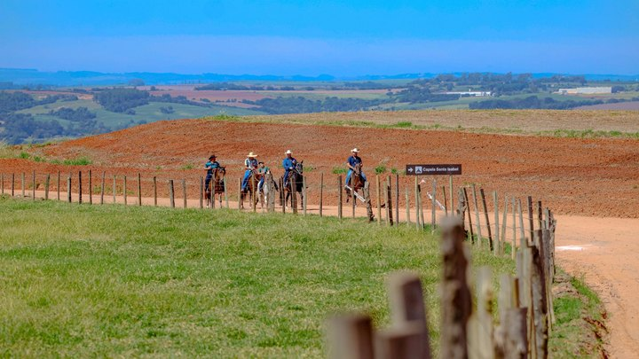
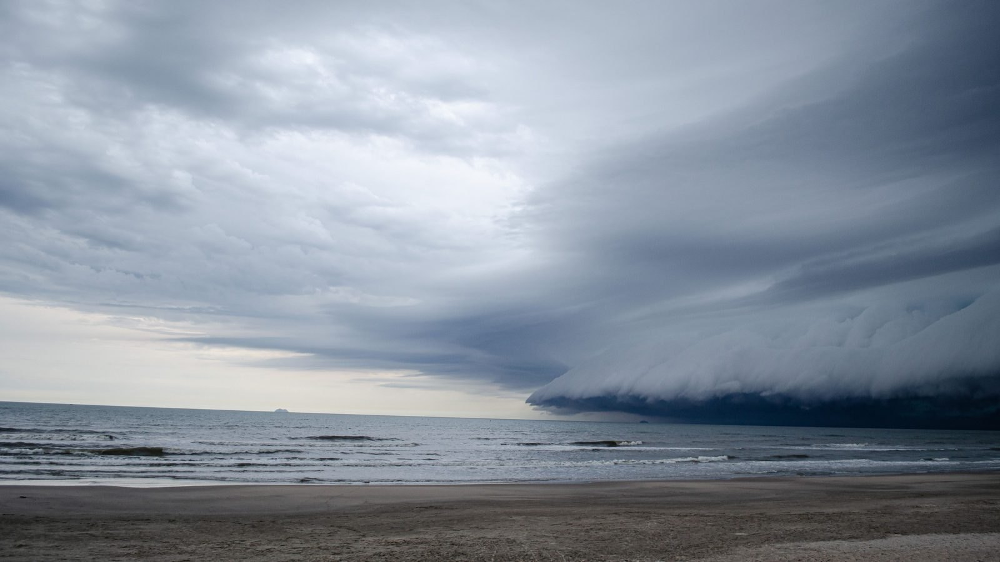

Itapema · TurismoCavalgada da Festa Farroupilha larga às 18h30 de quinta em Itapema, e a programação final mudou três horários de agosto
A agenda completa dos quatro dias, hora por hora.
A previsão do Estado saiu nesta terça: as instabilidades voltam na quarta, 9, e ganham força até sexta, 11, quando um ciclone extratropical se forma perto da costa do Rio Grande do Sul. No litoral há condição para chuva forte, vento e granizo justo nos dois primeiros dias da Festa Farroupilha de Itapema, que começa com a cavalgada das 18h30 de quinta e a abertura das 19h30 de sexta, as duas ao ar livre.
Em 30 segundos · Modo de Leitura, formato original Santa Informa
A Defesa Civil de SC soltou a previsão da semana.
O tempo vira a partir de quarta-feira, 9.
Uma baixa pressão se forma perto do Paraguai.
Na quinta, 10, a chuva ganha força.
Sobem as condições de vendaval e granizo.
Na sexta, 11, é o pico.
Um ciclone extratropical se forma perto do RS.
Há risco de tempestade severa localizada.
E a Festa Farroupilha começa bem aí.
A cavalgada sai às 18h30 de quinta.
A abertura é às 19h30 de sexta.
As duas são ao ar livre.
No litoral, as máximas de quinta vão a 26 °C.
Não é frente fria: esquenta e chove.
No sábado, 12, o tempo começa a firmar.
Dá para receber aviso por SMS.
É só mandar o CEP para o 40199.
Santa CatarinaPublicada em Redação Santa Informa

A Defesa Civil de Santa Catarina publicou nesta terça-feira, 8 de setembro, a previsão para o resto da semana, e ela piora dia a dia. A partir de quarta-feira, 9, uma área de baixa pressão se forma no interior do continente, perto do Paraguai, e as instabilidades voltam ao Estado. Os temporais começam na divisa com o Paraná e avançam para as outras regiões. Na quinta, 10, o tempo fica instável desde a madrugada, com chuva pontualmente intensa, e sobem as condições de vendaval e queda de granizo. Na sexta, 11, um ciclone extratropical se forma perto da costa do Rio Grande do Sul e há condição para temporal com vento e granizo em grande parte de Santa Catarina, com tempestade severa de forma localizada. No sábado, 12, o tempo começa a firmar, mas ainda pode chover na metade leste.
A quinta e a sexta são justamente a abertura da Festa Farroupilha de Itapema, que tem programação fechada de 10 a 13 de setembro. A cavalgada com a Chama Crioula sai às 18h30 de quinta do CTG Tropeiros do Litoral, na Casa Branca, passa por um trecho da Meia Praia, entra na Rua 291 e volta pela faixa de areia, com chegada prevista para as 21h. Na sexta, a abertura oficial na Praça da Paz é às 19h30, com show da Legião Gaúcha às 21h. Cavalgada e praça são ao ar livre, e a Prefeitura não publicou até agora nenhum plano de chuva, nem horário alternativo. O sábado e o domingo, com o Bailinho da Terceira Idade, o laço e os shows de encerramento, caem quando o tempo começa a firmar.
Não é aquela frente fria clássica que derruba o termômetro. A mudança vem com temperatura em alta. No Litoral e no Vale do Itajaí, as mínimas desta terça ficaram entre 10 °C e 15 °C. Na quarta sobem para a faixa de 14 °C a 17 °C, e na quinta chegam a 15 °C a 17 °C, com máximas de 24 °C a 26 °C. Ar quente e úmido encontrando instabilidade é a receita do temporal de fim de inverno, e é por isso que cabe granizo num dia de 26 °C.
A Defesa Civil do Estado tem três canais gratuitos de aviso. Por SMS, mande o CEP para o 40199. Por WhatsApp, mande o CEP para (61) 2034-4611. E o Defesa Civil Alerta dispara mensagem crítica direto para o celular de quem está na área de risco, sem cadastro. Itapema também mede o próprio tempo desde este mês: a cidade ganhou duas estações de chuva e vento pelo programa regional e comprou outras duas com recurso próprio. As orientações do Estado são as de sempre: longe de árvore, poste e placa, nada de atravessar rua alagada, abrigo fechado durante os raios e recolher o que o vento pode carregar lá fora.
O resumo de 30 segundos está no topo e a versão completa é o texto acima. Aqui ficam as três leituras da casa sobre o mesmo assunto.
Clara, a otimista
Previsão com três dias de antecedência é presente. Dá tempo de guardar o vaso da sacada, de conferir a calha e de decidir se vai levar guarda-chuva para a praça. Quinze anos atrás a gente descobria o temporal quando ele já estava batendo na janela.
E a festa é de quatro dias, não de um. Se a quinta e a sexta vierem molhadas, o sábado e o domingo entram justamente quando o tempo começa a firmar. Chuva de setembro no litoral costuma passar rápido, e gaúcho de CTG não é gente que desmonta festa por causa de água.
Seu Prudêncio, o criterioso
Merece atenção o encontro de duas agendas. De um lado, uma previsão oficial que fala em vendaval, granizo e tempestade severa localizada. De outro, uma cavalgada noturna com cavalo, cavaleiro e público dividindo a Meia Praia e a Rua 291 entre 18h30 e 21h. Cavalo assusta com raio e com trovão, e isso não é detalhe de meteorologia, é segurança de quem vai estar na rua.
Uma sugestão útil seria a Prefeitura publicar antes de quinta um critério simples e escrito: até que horário a decisão de manter ou adiar sai, em qual canal ela sai e qual é a data de reserva. Isso custa uma nota e evita gente chegando ao CTG na chuva sem saber o que fazer.
Dito isso, o cenário está bem melhor do que era. A cidade tem quatro estações novas medindo chuva e vento, o Estado avisa por SMS e por celular, e a previsão saiu com dias de folga. A estrutura para decidir com informação existe. Falta usar.
Caco, o sarcástico
Vinte e seis graus e granizo no mesmo dia. Setembro no litoral é aquele amigo que chega de bermuda e sai de casaco, e ainda pergunta por que você não avisou.
Marcaram a cavalgada para a noite de quinta e o ciclone marcou a estreia dele para a sexta. Dois eventos concorrendo na mesma semana, e só um tem show da Legião Gaúcha.
Reclamar mesmo, só de a gente ter que torcer pelo tempo em toda festa ao ar livre. Mas é o preço de morar num lugar onde a festa é na praça, de graça e com o mar do lado. Pelo menos aqui tem festa para a chuva atrapalhar. Tem cidade que não tem nem isso.
Fontes: Defesa Civil de Santa Catarina, pelo portal de notícias do Governo do Estado, publicação de 8 de setembro de 2026, de onde saem a evolução dia a dia da instabilidade, a área de baixa pressão perto do Paraguai, o ciclone extratropical de sexta-feira, as condições de vendaval, granizo e tempestade severa localizada, as faixas de temperatura do Litoral e do Vale do Itajaí, a fala da meteorologista Nicolle Reis, as orientações de segurança e os canais de alerta por SMS, WhatsApp e Cell Broadcast. A programação da Festa Farroupilha, com o horário da cavalgada e o da abertura na Praça da Paz, está na publicação da Prefeitura de Itapema de 3 de setembro de 2026 e na nossa matéria desta manhã. As quatro estações meteorológicas de Itapema estão na nossa matéria de 7 de setembro. O cruzamento entre a previsão e a agenda da festa foi feito por nós. Até o fechamento desta matéria, nem a Prefeitura nem a Defesa Civil de Itapema haviam publicado aviso ou plano de contingência para os dias de festa.

Itapema · TurismoA agenda completa dos quatro dias, hora por hora.
 Itapema · Defesa Civil
Itapema · Defesa CivilQuem mede o tempo dentro do município agora.
 Santa Catarina · Clima
Santa Catarina · ClimaO ciclone anterior, no começo do mês.